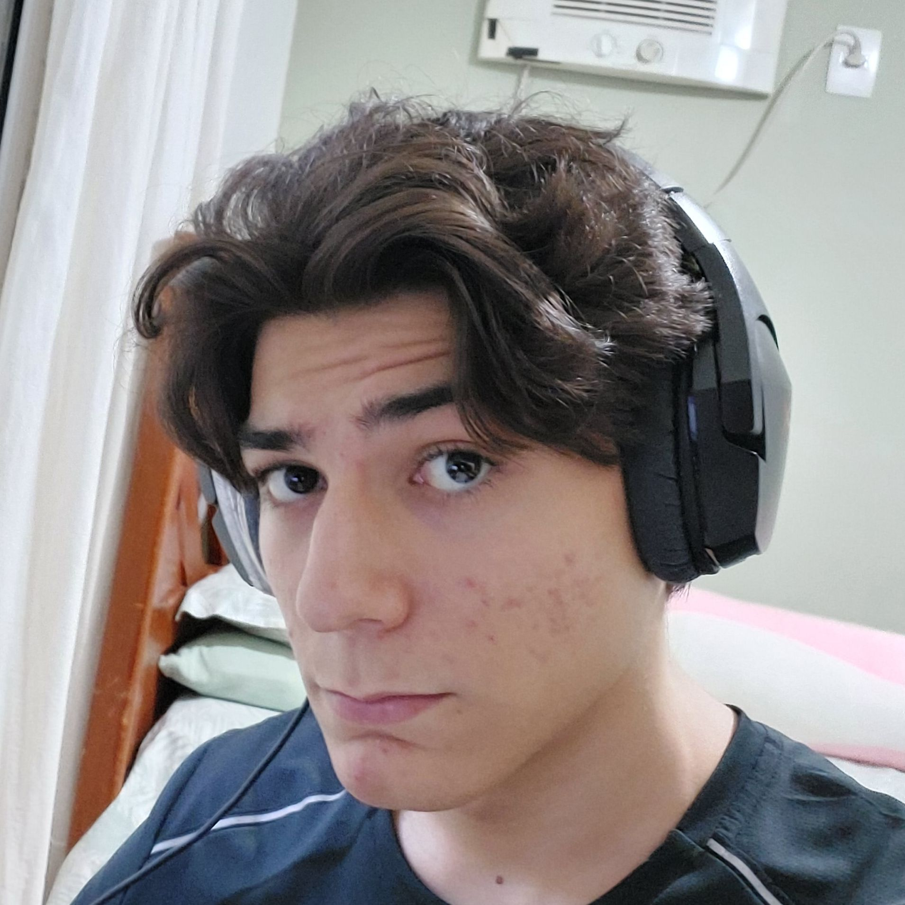
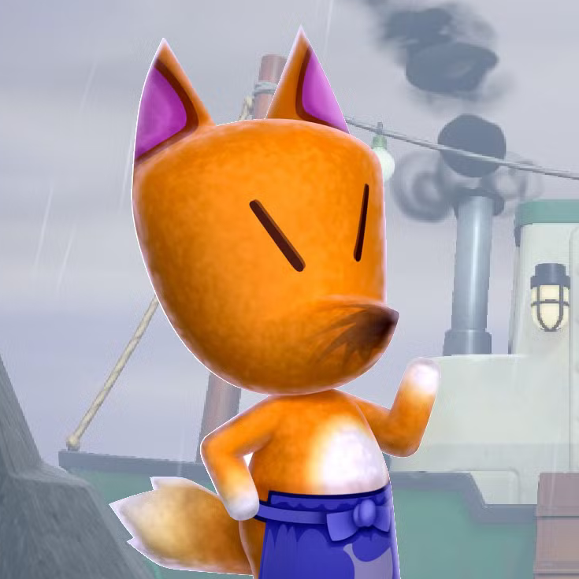
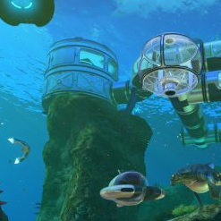

voltar
Pedro Avila
Universitário / Programador Amador / Modelador 3D / Desenhista

Curriculo
2014 - 2017
> Ibeu Ingles Global
Curso de língua inglesa - 1º ao 6º ano
2017 - 2022
> Hopeland English Academy
Curso de lingua inglesa - Nivel B2 pelo CEFR
Dezembro (2017) - Janeiro (2018)
> Escola do Inventor
Curso de férias (Programação, robótica, "pensamento maker")
Agosto (2018) - Junho (2019)
> Escola de Programação e Robótica Ctrl+Play
Primeiro e terceiro módulo do curso regular de programação e robótica
Janeiro (2021) - Junho (2023)
> Super Geeks
Fases 5, 6, 7 e
advanced
do curso de programação e robótica
Projetos
>Leaf Stop
Um jogo 3D isométrico similar a Animal Crossing
onde o jogador controla uma raposa antropomórfica
e seu objetivo é gerenciar um posto de gásolina.

>Deep Blue
Outro jogo 3D, desta vez de perspectiva em
primeira pessoa, onde o jogador deve explorar uma
base submarina abandonada descobrir
o que aconteceu com a tripulação.

 voltar
voltar